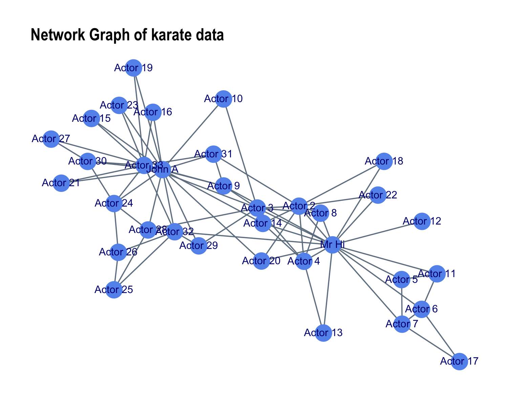
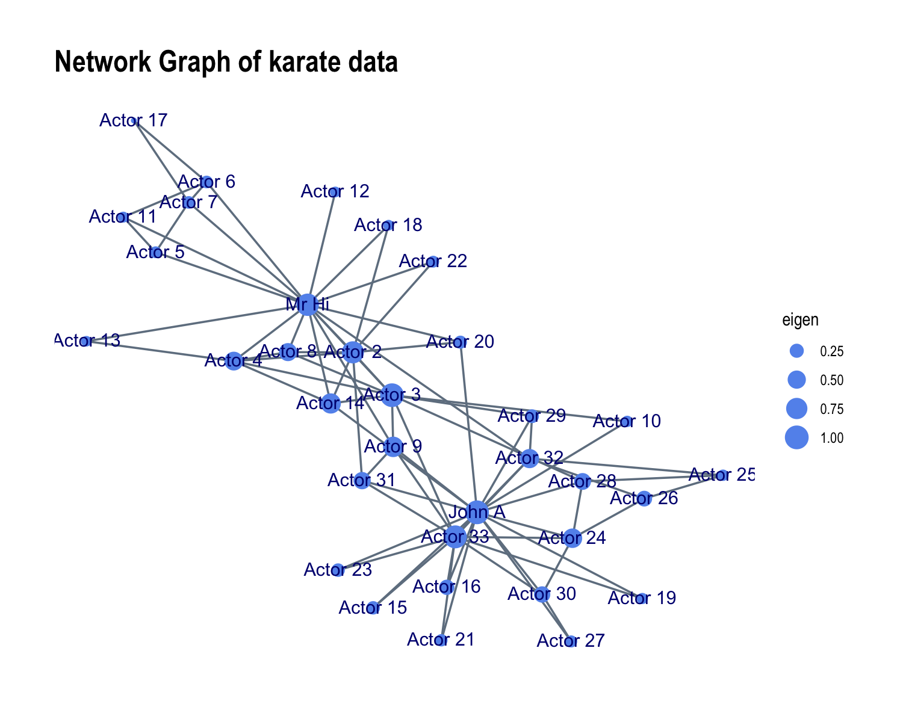

The purpose of the imageNet package is to allow for users to produce clear and concise graphs of their networks. As a part of this package, the baseNet function produces a customizable visualizations of the standard network. This document is intended to show you how to best use the baseNet function.
Example Dataset: Karate Social Network
To understand how to use the baseNet function, we’ll use the karate dataset as an example. This igraph dataset is a social network that maps relationships between members of a university karate club. The data is a part of the igraphdata package and is documented in greater detail in ?igraphdata::karate
library(igraphdata)
data("karate")
as_tbl_graph(karate)
#> # A tbl_graph: 34 nodes and 78 edges
#> #
#> # An undirected simple graph with 1 component
#> #
#> # Node Data: 34 x 4 (active)
#> Faction name label color
#> <dbl> <chr> <chr> <dbl>
#> 1 1 Mr Hi H 1
#> 2 1 Actor 2 2 1
#> 3 1 Actor 3 3 1
#> 4 1 Actor 4 4 1
#> 5 1 Actor 5 5 1
#> 6 1 Actor 6 6 1
#> # … with 28 more rows
#> #
#> # Edge Data: 78 x 3
#> from to weight
#> <int> <int> <dbl>
#> 1 1 2 4
#> 2 1 3 5
#> 3 1 4 3
#> # … with 75 more rowsAs you can see above, the dataset contains 24 unique nodes and 78 edges. When we plot the igraph network using the standard plot() function, the following visulization is produced:

While this graph allows for us to gain a general understanding of our network, it could be improved significantly. One may find it beneficial to label the nodes using the complete name of each karate club member. Additionally, there is no key that makes it clear that the nodes are colored based on the “Faction” variable. Not only would it be good to know this information, but perhaps we would like to color the nodes based on some other variable. Furthermore, we might want to include a title that gives us a bit more information about the network. Now let’s see how the baseNet function can be applied to the karate data to allow us to gain a better understanding of the network.
k <- baseNet(karate, label = name, layout = "fr")
k
#> $data
#> # A tbl_graph: 34 nodes and 78 edges
#> #
#> # An undirected simple graph with 1 component
#> #
#> # Node Data: 34 x 8 (active)
#> Faction name label color betweenness closeness degree eigen
#> <dbl> <chr> <chr> <dbl> <dbl> <dbl> <dbl> <dbl>
#> 1 1 Mr Hi H 1 250. 0.00758 16 0.858
#> 2 1 Actor 2 2 1 33.8 0.00549 9 0.829
#> 3 1 Actor 3 3 1 36.6 0.00585 10 0.990
#> 4 1 Actor 4 4 1 1.33 0.00524 6 0.545
#> 5 1 Actor 5 5 1 0.5 0.00459 3 0.153
#> 6 1 Actor 6 6 1 15.5 0.00459 4 0.185
#> # … with 28 more rows
#> #
#> # Edge Data: 78 x 4
#> from to weight edge_weight
#> <int> <int> <dbl> <int>
#> 1 1 2 4 1
#> 2 1 3 5 1
#> 3 1 4 3 1
#> # … with 75 more rows
#>
#> $network Note that the baseNet function produces a list, k, that contains both a tidygraph of the network (data) and a ggraph object of the network plot (network). Regardless, baseNet allows for the user to customize their network graph even further than see above. Let’s say one wishes to size the nodes based on their eigenvalue centricity. Then, the user should input the value eigen into the node_color argument of the baseNet function, which will produce the following plot:

Overall, the baseNet function allows users to modify the node size, node color, edge size, and edge color of their networks. They also have the option of specifying the label for the nodes, the color of the label color, and the layout of the network. For more information about the baseNet function and the ways in which it can be modified, please use ?imageNet::baseNet